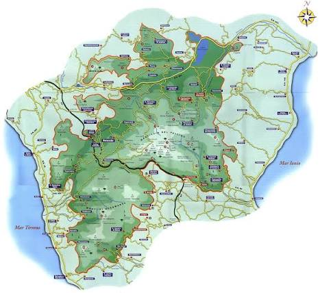
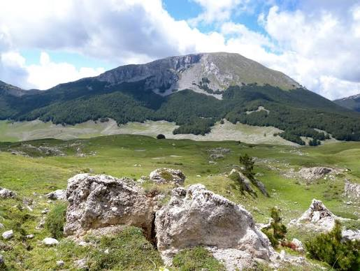

Il parco nazionale del Pollino (internazionalmente noto come Pollino Global Geopark), situato tra Basilicata e Calabria tra le province di Cosenza, Potenza e Matera, con i suoi 192 565 ettari, di cui 88 650 nel versante lucano e 103 915 in quello calabro, è il parco nazionale più grande d'Italia; prende il nome dall'omonimo massiccio montuoso. Dal novembre 2015, con l'inserimento nella lista globale dei geoparchi da parte dell'UNESCO, il parco del Pollino è considerato sito patrimonio mondiale.
Il parco nazionale del Pollino è stato istituito nel 1988, mentre la perimetrazione provvisoria è del 1990, così come le misure di salvaguardia. Il parco si estende su 56 comuni (di cui 24 in Basilicata e 32 in Calabria), 9 comunità montane e 4 riserve orientate: Rubbio in Basilicata, Raganello, Lao e Argentino in Calabria. L'emblema del parco è il pino loricato; tale specie è presente anche in numerose altre stazioni fitoclimatiche delle montagne balcaniche e greche. Il territorio del Parco comprende in tutto 56 comuni, 24 in Basilicata (22 nella provincia di Potenza e 2 nella provincia di Matera), e 32 in Calabria (provincia di Cosenza).

Le sue vette, tra le più alte del sud d'Italia, sono coperte di neve per molti mesi dell'anno. Dalle cime, ad occhio nudo, si osservano le coste tirreniche e il litorale ionico.L'emblema del parco è il pino loricato; tale specie è presente anche in numerose altre stazioni fitoclimatiche delle montagne balcaniche e greche.
Per saperne di pù sul Pino Loricato